SEGUNDO LOGRO SIGNIFICATIVO
Descriptivos socio-demográficos y de delitos prioritarios
Acknowledgements
The Rule of Law in North Macedonia: Key Findings from the General Population Poll 2023 was produced by the World Justice Project under the research oversight of Alejandro Ponce and the executive direction of Elizabeth Andersen.
The production of this report was led by Ana María Montoya. This report was prepared by Erin Campbell, James Davis, Dalia Habiby, Artha Pillai, Santiago Pardo, and Carlos Toruño.
The findings in this report are taken from the General Population Poll (GPP) conducted for the World Justice Project in 2023. The GPP’s conceptual framework and methodology were developed by Mark David Agrast, Juan Carlos Botero, and Alejandro Ponce. The production of this iteration of country report series was developed by Ana María Montoya, Santiago Pardo, Alejandro Ponce, Tanya Primiani, Hannah Rigazzi, Natalia Rodríguez Cajamarca, Victoria Thomaides, and Carlos Toruño Paniagua.
Sampling, fieldwork, and data processing in North Macedonia was conducted by IPSOS Strategic Marketing.
Mariana Lopez was the graphic design lead for this report. FlitStudio served as lead website developer with assistance from Natalia Jardon, Mariana Lopez, and Enrique Paulin.
This report was made possible with the support of the U.S. Department of State’s Bureau of International Narcotics and Law Enforcement Affairs' Office of Western Hemisphere (INL). The views expressed in this report are those of the survey respondents and do not necessarily represent the views of INL.
Photo for cover provided by Kisa Markiza, from iStock.
© Copyright 2023 by the World Justice Project.
Requests to reproduce this document should be sent to:
Alejandro Ponce
World Justice Project
1025 Vermont Avenue NW, Suite 1200
Washington, DC 20005, USA
Email: aponce@worldjusticeproject.org
Washington, DC
1025 Vermont Avenue NW, Suite 1200
Washington, DC 20005, USA
P +1 (202) 407-9330
Mexico City
Gobernador José Guadalupe Covarrubias
57-20, San Miguel Chapultepec, 11850,
Miguel Hidalgo, Mexico City
worldjusticeproject.mx


PRESENTACIÓN
El sistema de justicia penal acusatorio en México ya no es ninguna novedad. Han pasado 15 años desde que se publicó en el Diario Oficial de la Federación el 18 de junio 2008 la trascendental reforma constitucional que introdujo a nuestro país el proceso penal acusatorio y oral; casi 10 años desde la publicación del Código Nacional de Procedimientos Penales. Todas las instituciones del entorno de seguridad y justicia han sufrido una o varias modificaciones y/o adecuaciones orgánicas y operativas. Policías, ministerios públicos o fiscales, defensores públicos, defensores privados, jueces penales, magistrados penales, ministros de la SCJN, supervisores de medidas cautelares, asesores jurídicos: todos y cada uno de los operadores han recibido horas y horas de capacitaciones sobre el nuevo sistema penal acusatorio, si no es que muchos pertenecen ya a aquellas generaciones -no tan jóvenes- que nunca conocieron ni ejercieron el sistema inquisitivo.
Cabe resaltar que a lo largo de estos 15 años desde los ejes de planeación nacional, planeación sectorial y políticas de las instituciones de justicia penal se ha hecho hincapié en ciertos temas transversales, principalmente el respeto a los derechos humanos y la perspectiva de género.
Es momento de hacer un corte de caja respecto de la maduración del sistema de justicia penal acusatorio en México y analizar cómo opera el sistema que miles de personas viven día a día, desde hace por lo menos 7 años. En ese sentido, la fuente principal de este diagnóstico es la Encuesta Nacional de Población Privada de la Libertad 2021 (ENPOL), aplicada por INEGI a más de 60 mil personas en prisión, ya sea porque se encuentran atravesando un proceso penal o cumpliendo sentencia. Es la experiencia agregada de todas estas personas la que nos puede dar un panorama real, cercano y completo del estado de la justicia penal en México.
El análisis de la ENPOL incorpora el marco de referencia de justicia centrada en las personas, el cual se centra en el bienestar, los derechos y las necesidades de justicia de todas las personas cuando enfrentan cualquier asunto legal. En el contexto penal, las necesidades de justicia implican, por un lado, las distintas garantías y derechos de las personas procesadas al entrar en contacto con el sistema penal y, por otro, las necesidades de la sociedad por vivir en un contexto más seguro, con un sistema de justicia justo, efectivo y responsivo.
La justicia centrada en la personas se centra en el bienestar, los derechos y las necesidades de los individuos cuando enfrentan cualquier asunto legal
La justicia centrada en las personas es consistente con las metas globales de los sistemas de justicia: la protección de derechos, una justicia accesible y efectiva, la seguridad pública y la rendición de cuentas. Ofrece un nuevo enfoque para diseñar e implementar programas de justicia, basado en datos y evidencia que ayuden a orientar los procesos co-creativos de política pública, tomando como punto focal, las experiencias y necesidades de justicia de todas las personas, incluidas las personas acusadas, víctimas y la sociedad en general.
Segundo logro significativo.
Descriptivos socio-demográficos y de delitos prioritarios.
El Milestone 1 presentó el Índice de criterios mínimos de debido proceso el cual provee una respuesta concreta a la necesidad de conocer el nivel de cumplimiento del debido proceso en nuestro sistema penal. Esto, a base del análisis de los críterios mínimos seleccionados que incluyen: a) diversas garantías procesales que deben cumplirse desde la detención hasta la sentencia de una persona; b) variables en torno al uso arbitrario de la autoridad, a través del uso de la fuerza aplicado a las detenciones y de las prácticas de corrupción, y c) aborda la protección de derechos humanos, concretamente de la integridad física y la libertad.
Además, en el Milestone 1 presentamos el análisis del cumplimiento del debido proceso, de acuerdo con los distintos grupos socio-demográficos. Este análisis evidenció la necesidad de presentar desde el inicio del reporte, la información básica de las personas que integran la muestra y, cuyas experiencias estamos analizando. Esta información básica se refiere a atributos demográficos como el sexo, la edad, el color de piel, pero también sociales como la nacionalidad y pertenencia a un grupo étnico, la escolaridad y el estado civil. Asimismo, nos pareció relevante mostrar características implicadas con el proceso de las personas, por ejemplo, si las personas ya fueron sentenciadas o si son procesadas pues se encuentran esperando su sentencia, cuáles son las delitos más registrados y si se reconocen como culpables o como inocentes.
Por lo tanto, este Milestone 2 se concentra en presentar dos distintos contenidos, uno de ellos siendo la información socio-demográfica de la muestra.
Por otra parte, el Milestone 2 un primer análisis correspondiente al Capítulo 2. Política Criminal, sobre la actuación del estado frente a los delitos prioritarios, de acuerdo con las necesidades de las personas que han tenido alguna experiencia de victimización. Estas experiencias las recabamos de la Encuesta Nacional de Victimización y Percepción de Seguridad, aplicada por INEGI desde 2014 a la fecha.
2. Delitos prioritarios
QUIÉN ESTÁ EN PRISIÓN
QUIÉN ESTÁ EN PRISIÓN
INTRODUCCIÓN
Este reporte centra su atención en las necesidades de justicia de las personas, tanto aquellas que están privadas de su libertad, como aquellas fuera de prisión. En ese contexto, es necesario identificar, desde un inicio, a qué personas nos referimos cuando hablamos de la población penitenciaria, es decir, idenficiar los distintos atributos socio-demográficos que pueden incidir en tener una experiencia diferenciada al entrar en contacto con el aparato de justicia penal estatal.
Por lo tanto, el reporte cuenta con una breve sección inicial que describe la composición de la muestra. Esta muestra es representativa a nivel estatal y nacional, está integrada por la experiencia de las personas que se encontraban en prisión de 2008 hasta junio de 2021 y que fueron juzgadas bajo el sistema acusatorio. Estas experiencias presentan la vivencia de 27,107 hombres y 7,386 mujeres. El tamaño y la representatividad de la muestra permite realizar distintos cortes los cuales se describen a continuación.
HALLAZGOS PRELIMINARES
En relación con el sexo, la muestra se compone por el 79% de hombres y el 21% de mujeres; a su vez, el 6% reportó ser parte de la comunidad LGBTQ mientras que el 94% no . En relación con la preferencia sexual, el 94% de las personas reportaron ser heterosexuales, el 4% se reportó como bisexual y el 2%, como homosexual.
La nacionalidad de las personas es predominantemente mexicana ya que solo el 2% respondió ser de otra nacionalidad. En relación con la pertenencia étnica, el 17% se autoadscriben como personas indígenas y el 2%, como personas afromexicanos o afrodescendientes. Sin embargo, solo el 5% de la muestra es hablante de una lengua indígena. El color de piel de las personas de la muestra es predominantemente moreno claro y moreno . Por su parte, el 24% de las personas reportaron tener alguna condición de discapacidad, ya fuera visual, auditiva o motriz.
La edad más frecuente de las personas de la muestra está entre los 25 y 35 años, representando el 42%. En contraste, las personas que tienen entre 20 y 25 años, representan el 14%, y las personas entre 35 y 40 años de edad, representan el 16%. La escolaridad es recogida por INEGI a través del grado educativo terminado. El 21% de las personas que terminaron primaria, el 46% de las personas completó la secundaria y el 20% de las personas que concluyeron la preparatoria o bachillerato. El estado civil de las personas es diverso pues el 46% de la muestra reportó tener una pareja, ya fuera en unión libre o en matrimonio, mientras que el 26% reportó ser soltero y las personas separadas o divorciadas representan el 26% .
El estado de nacimiento más frecuente entre las personas de la muestra es el Estado de México, seguido de la Ciudad de México. En relación con la condición procesal , los delitos más frecuentes son el robo y el homicidio doloso y el 40% de la muestra se encuentra esperando una sentencia (con la calidad de persona procesada). Las personas sentenciadas representan el 60% de las personas de la muestra y las penas más frecuentes de las sentencias son de 5 a 10 años, impuestas al 33% de la muestra, de 0 a 5 años impuestas al 19%, y de 10 a 15 años, al 13%. Finalmente, de las 34,493 personas, el 44% se reconoce como culpable y el 56% se reportó como inocente.
Estos hallazgos son preliminares y podrían cambiar ya que están sujetos a una última revisión. Favor de no circular o compartir hasta su publicación final.
La construcción de las variables socio-demográficas puede consultarse en el Directorio de variables.
Quién está en prisión
PARTE 1.
Población privada de la libertad por distintos cortes socio-demográficos
SEXO
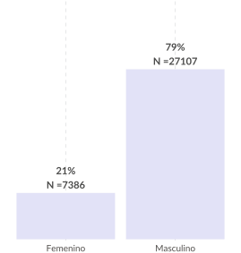 GÉNERO
LGBTQ+
PREFERENCIA SEXUAL
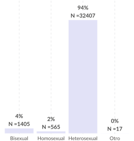
NOTA: los valores absolutos corresponden a una muestra representativa, no a la población penitenciaria en su totalidad. La muestra corresponde a las personas juzgadas bajo el nuevo sistema, del año 2008 al 2021.
Fuente: ENPOL 2021.
Quién está en prisión
PARTE 1.
Población privada de la libertad por distintos cortes socio-demográficos
PERTENENCIA INDÍGENA
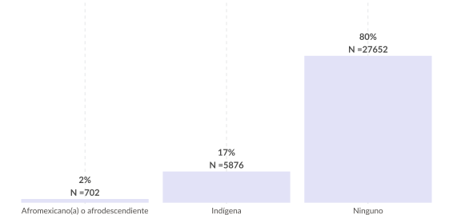NACIONALIDAD
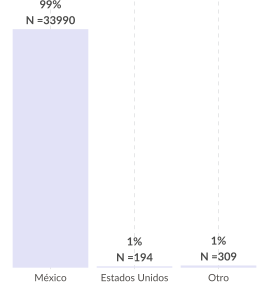
HABLANTE DE LENGUA INDÍGENA
NOTA: los valores absolutos corresponden a una muestra representativa, no a la población penitenciaria en su totalidad. La muestra corresponde a las personas juzgadas bajo el nuevo sistema, del año 2008 al 2021.
Fuente: ENPOL 2021.
Quién está en prisión
PARTE 1.
Población privada de la libertad por distintos cortes socio-demográficos
COLOR DE PIEL
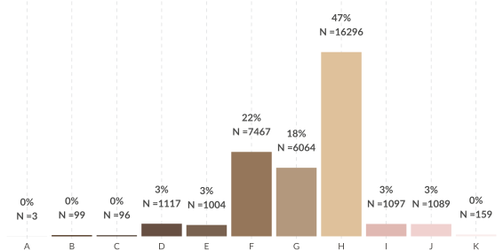CONDICIÓN DE DISCAPACIDAD
ESTADO CIVIL
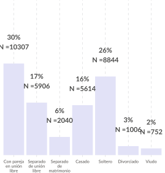
NOTA: El corte sociodemográfico de "color de piel" es el cálculo promedio del autorreportado por el respondiente y el encuestador con base en la escala PERLA. Los valores absolutos corresponden a una muestra representativa, no a la población penitenciaria en su totalidad. La muestra corresponde a las personas juzgadas bajo el nuevo sistema, del año 2008 al 2021.
Fuente: ENPOL 2021.
Quién está en prisión
PARTE 1.
Población privada de la libertad por distintos cortes socio-demográficos
EDAD
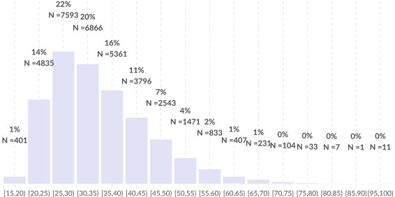GRADO EDUCATIVO
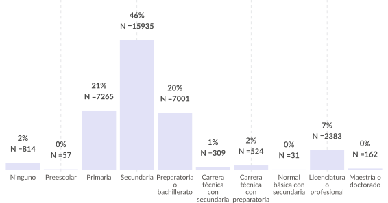NOTA: los valores absolutos corresponden a una muestra representativa, no a la población penitenciaria en su totalidad. La muestra corresponde a las personas juzgadas bajo el nuevo sistema, del año 2008 al 2021.
Fuente: ENPOL 2021.
Quién está en prisión
PARTE 1.
Población privada de la libertad por distintos cortes socio-demográficos
AÑOS DE SENTENCIA
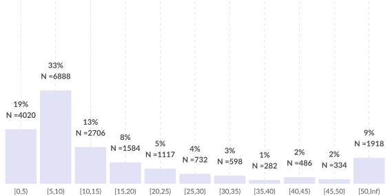RECONOCIMIENTO DE CULPABILIDAD
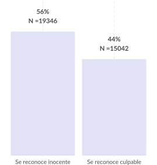
CONDICIÓN PROCESAL
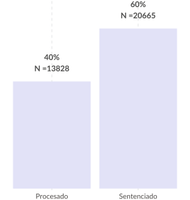
NOTA: los valores absolutos corresponden a una muestra representativa, no a la población penitenciaria en su totalidad. La muestra corresponde a las personas juzgadas bajo el nuevo sistema, del año 2008 al 2021.
Fuente: ENPOL 2021.
Quién está en prisión
PARTE 1.
Población privada de la libertad por distintos cortes socio-demográficos
ESTADO DE NACIMIENTO

DELITOS
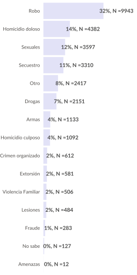
NOTA: los valores absolutos corresponden a una muestra representativa, no a la población penitenciaria en su totalidad. La muestra corresponde a las personas juzgadas bajo el nuevo sistema, del año 2008 al 2021.
Fuente: ENPOL 2021.
DELITOS PRIORITARIOS
DELITOS PRIORITARIOS
INTRODUCCIÓN
El segundo capítulo sobre Política criminal consiste en las estrategias del Estado Mexicano para articular sus facultades y recursos para investigar, perseguir y sancionar la criminalidad. En ese contexto, las necesidades de justicia de las personas fuera de prisión se centran en contar con un sistema de justicia penal que sea efectivo, eficiente e íntegro al emplear esas facultades y recursos, pero también que sea estratégico en tanto responda a las prioridades identificadas por las víctimas y por la sociedad en general representada por el gobierno nacional en turno. Por lo tanto, este capítulo se integra a partir de tres secciones o temáticas: a) estrategias generales de investigación, persecución y sanción; b) desempeño institucional, y c) coordinación e interacción entre instituciones.
Para introducir la perspectiva de actuación estratégica, desarrollamos dos variables acerca de dos grupos de delitos prioritarios, los que son prioritarios para las víctimas del delito y aquellos prioritarios para la ciudadanía en general. El primer grupo de delitos prioritarios refleja la perspectiva de las víctimas, construida a partir de los delitos registrados por la Encuesta Nacional de Victimización y Percepción sobre Seguridad Pública (ENVIPE), aplicada por INEGI.
La estrategia analítica fue analizar todos los años reportados en ENVIPE, de 2014 a 2021 e identificar cuáles son los delitos con mayor número de ocurrencias. Se encontró que los más ocurrentes son: robo de autopartes, daño en propiedad ajena, extorsión, robo a transeúnte y robo a casa habitación. La selección se basó en su prevalencia durante ese periodo de tiempo ya que el robo de autopartes se registró como el más prevalente en todos los años; el daño en propiedad ajena se reportó entre los más prevalentes en todos excepto en un año, y los otros tres delitos consistentes en extorsión, robo a transeúte y robo a casa habitación están presente en la mitad de los años, respectivamente, con un porcentaje muy similar. Estos cinco delitos agrupan más de la mitad de las ocurrencias registradas por ENVIPE.
Esta entrega presenta un primer análisis acerca de la actuación estratégica del sistema de justicia penal, a través de las detenciones de los delitos prioritarios de acuerdo con la perspectiva de victimización. A fin de analizar la mayor cantidad de detenciones por estos delitos, limitamos el análisis a los años de 2018 a 2021, a fin de captar personas con sentencias cortas, impuestas por los delitos de: robo de autopartes, daño en propiedad ajena, extorsión, robo a transeúnte y robo a casa habitación, los cuales son los más prevalentes según la ENVIPE. Por esto, se presentan primero, los delitos registrados por la ENVIPE y por la ENPOL en este periodo, y posteriormente la brecha entre las detenciones y las ocurrencias, a fin de identificar una posible estrategia (o su inexistencia) para atender los delitos que más duelen a las personas víctimas.
HALLAZGOS PRELIMINARES
Un primer hallazgo es que las detenciones más frecuentes ocurren por los delitos de: homicidio doloso, representando el 12% del total; el robo a negocio, con el 10%, y violación sexual y robo a casa habitación, con el 9%, respectivamente. En contraste, el daño en propidad y el robo de autopartes apenas alcanzan el 0%. Los delitos que implican mayor número de detenciones no coinciden con los delitos más reportados por víctimas, según la ENVIPE.
Un segundo hallazgo es que los delitos más ocurridos, desde la experiencia de las víctimas, son: el robo de autopartes, representando el 16%, seguido de algún tipo de vandalismo, del robo a transeúnte o en el transporte público, robo a casa habitación y amenazas, todos representados con el 13%.
Un tercer hallazgo es que el grupo de delitos prioritarios representa, en promedio, el 17.5% de las detencioens, es decir, poco menos de una quinta parte de las detenciones realizadas.
Esta serie de hallazgos puede interpretarse de dos distintas formas: que las mayores afectaciones experimentadas por las víctimas no son consideradas prioritarias para las corporaciones aprehensoras o bien, que las personas detenidas por estos delitos son procesadas por alguna vía alterna que no implicó su encarcelamiento, por ejemplo, alguna salida anticipada estipulada en el Código Nacional de Procedimientos Penales. Es decir, con base en la ENPOL no puede advertirse algún tipo de actuación estratégica que integre la prioridad de las necesidades de las víctimas pero pueden existir otras fuentes, como los registros administrativos institucionales, que permitan completar el análisis y generar observaciones más concluyentes.
Estos hallazgos son preliminares y podrían cambiar ya que están sujetos a una última revisión. Favor de no circular o compartir hasta su publicación final.
Detenciones y delitos prioritarios
PARTE 2.
Número de detenciones registradas entre 2018 y 2021, frente a los delitos prevalentes registrados en la ENVIPE.
2.1. Distribución de delitos registrados en ENPOL, 2018-2021
Las detenciones más frecuentes ocurren por los delitos de homicidio doloso, robo a negocio y violación sexual. En contraste, el daño en propiedad ajena y el robo de autopartes fueron delitos que propiciaron muchas menos detenciones.

2.2. Distribución de delitos registrados en ENVIPE, 2018-2021
El delito más prevalente es el robo de autopartes, seguido de la falta administrativa de pinta de barda y del robo a transeúnte. El delito menos prevalente es el secuestro.

Fuente: ENPOL 2021.
Detenciones y delitos prioritarios
PARTE 2.
P2.3. Número de detenciones de delitos prioritarios según ENVIPE, 2018-2021
Las detenciones por los delitos prioritarios representan, en promedio, el 17.5% de las detenciones. Las detenciones por los delitos prioritarios aumentó ligeramente de 17% a 19% en ese periodo.

Fuente: ENPOL 2021.